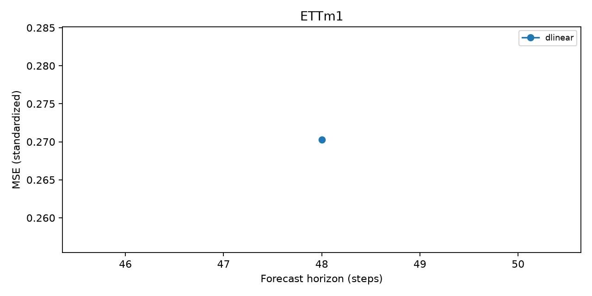

Run: 20261026T185131Z-3d48c449. Status: completed. Protocol: hn_mvts_code.
MSE/MAE: train-standardized units. *_raw: original units. MASE: seasonal train scale. Coverage: nominal 80%. Hybrid intervals describe residual uncertainty conditional on the base point. Pilot/subset runs do not establish paper reproduction.
| dataset | model | horizon | seed | pilot | n_origins | mse | mae | mase | prediction_seconds | selection_seconds | peak_rss_mb | arima_nonconverged_fits |
|---|---|---|---|---|---|---|---|---|---|---|---|---|
| ETTm1 | dlinear | 48 | 0 | False | 11473 | 0.27028 | 0.323549 | 0.773911 | 0.272803 | 111.784 | 358.785 | 0 |
| dataset | model | context | horizon | protocol | pilot | seeds | mse_mean | mse_std | mae_mean | mase_mean |
|---|---|---|---|---|---|---|---|---|---|---|
| ETTm1 | dlinear | 336 | 48 | hn_mvts_code | False | 1 | 0.27028 | NaN | 0.323549 | 0.773911 |
| dataset | model | horizon | target_kind | expected_mse | actual_mse | difference | status | mismatches |
|---|---|---|---|---|---|---|---|---|
| ECL | dlinear | 48 | author_log_single_seed | 0.125660 | NaN | NaN | not_run | NaN |
| ECL | dlinear | 96 | author_log_single_seed | 0.140730 | NaN | NaN | not_run | NaN |
| ECL | dlinear | 192 | author_log_single_seed | 0.158039 | NaN | NaN | not_run | NaN |
| ECL | dlinear | 336 | author_log_single_seed | 0.171912 | NaN | NaN | not_run | NaN |
| ETTm1 | dlinear | 48 | author_log_single_seed | 0.270280 | 0.27028 | -7.253008e-09 | within_tolerance | |
| ETTm1 | dlinear | 96 | author_log_single_seed | 0.300417 | NaN | NaN | not_run | NaN |
| ETTm1 | dlinear | 192 | author_log_single_seed | 0.335659 | NaN | NaN | not_run | NaN |
| ETTm1 | dlinear | 336 | author_log_single_seed | 0.372058 | NaN | NaN | not_run | NaN |
| ETTm2 | dlinear | 48 | author_log_single_seed | 0.127707 | NaN | NaN | not_run | NaN |
| ETTm2 | dlinear | 96 | author_log_single_seed | 0.163768 | NaN | NaN | not_run | NaN |
| ETTm2 | dlinear | 192 | author_log_single_seed | 0.218590 | NaN | NaN | not_run | NaN |
| ETTm2 | dlinear | 336 | author_log_single_seed | 0.273792 | NaN | NaN | not_run | NaN |
| PEMS03 | dlinear | 48 | author_log_single_seed | 0.151037 | NaN | NaN | not_run | NaN |
| PEMS03 | dlinear | 96 | author_log_single_seed | 0.188782 | NaN | NaN | not_run | NaN |
| PEMS03 | dlinear | 192 | author_log_single_seed | 0.208440 | NaN | NaN | not_run | NaN |
| PEMS03 | dlinear | 336 | author_log_single_seed | 0.224997 | NaN | NaN | not_run | NaN |
| PEMS04 | dlinear | 48 | author_log_single_seed | 0.163712 | NaN | NaN | not_run | NaN |
| PEMS04 | dlinear | 96 | author_log_single_seed | 0.201423 | NaN | NaN | not_run | NaN |
| PEMS04 | dlinear | 192 | author_log_single_seed | 0.220130 | NaN | NaN | not_run | NaN |
| PEMS04 | dlinear | 336 | author_log_single_seed | 0.244436 | NaN | NaN | not_run | NaN |
| PEMS07 | dlinear | 48 | author_log_single_seed | 0.147219 | NaN | NaN | not_run | NaN |
| PEMS07 | dlinear | 96 | author_log_single_seed | 0.185083 | NaN | NaN | not_run | NaN |
| PEMS07 | dlinear | 192 | author_log_single_seed | 0.205388 | NaN | NaN | not_run | NaN |
| PEMS07 | dlinear | 336 | author_log_single_seed | 0.225354 | NaN | NaN | not_run | NaN |
| PEMS08 | dlinear | 48 | author_log_single_seed | 0.187783 | NaN | NaN | not_run | NaN |
| PEMS08 | dlinear | 96 | author_log_single_seed | 0.262265 | NaN | NaN | not_run | NaN |
| PEMS08 | dlinear | 192 | author_log_single_seed | 0.306561 | NaN | NaN | not_run | NaN |
| PEMS08 | dlinear | 336 | author_log_single_seed | 0.326546 | NaN | NaN | not_run | NaN |
| Weather | dlinear | 48 | author_log_single_seed | 0.137078 | NaN | NaN | not_run | NaN |
| Weather | dlinear | 96 | author_log_single_seed | 0.172906 | NaN | NaN | not_run | NaN |
| Weather | dlinear | 192 | author_log_single_seed | 0.216397 | NaN | NaN | not_run | NaN |
| Weather | dlinear | 336 | author_log_single_seed | 0.263550 | NaN | NaN | not_run | NaN |

[]